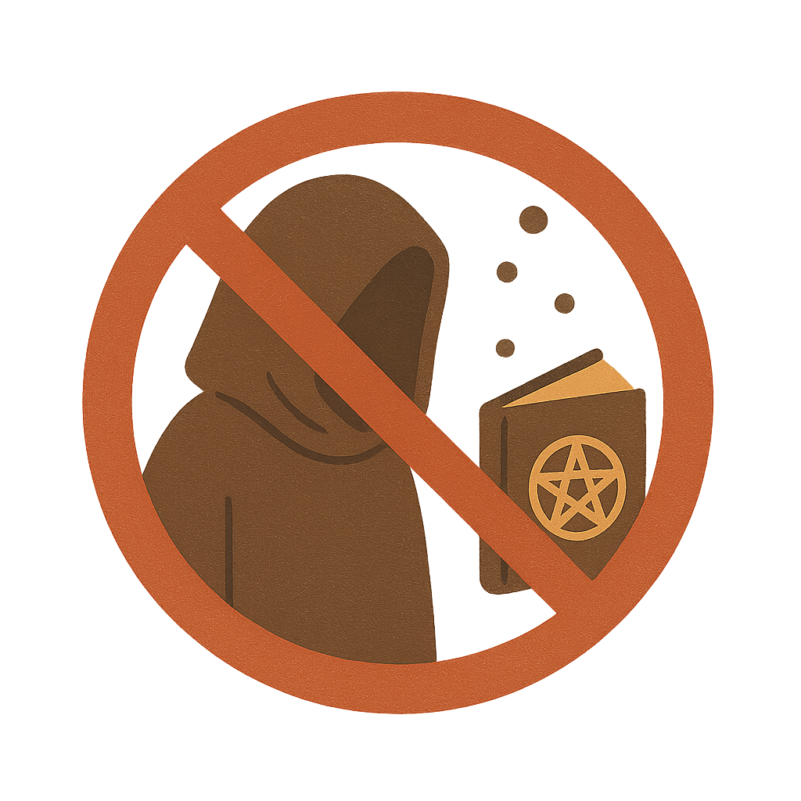

The Concept of Witchcraft in Islam

1. A Forbidden Act
Witchcraft (sihr) is considered a major sin in Islam. The Qur’an and Hadith strongly condemn its practice and emphasize its destructive impact on individuals and society.
2. Belief in the Unseen, Not the Supernatural
Islam acknowledges the existence of the unseen (ghayb), including jinn, but warns against seeking power through them. Relying on supernatural means violates the trust Muslims should place in Allah alone.
3. Protection Through Faith
Muslims are encouraged to protect themselves from harm through prayer, reading of the Qur’an (especially Surah Al-Falaq and An-Naas), and seeking refuge in Allah from all evil.